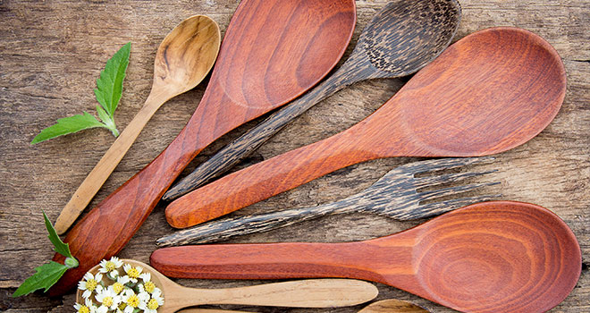

How to pack food for Trekking ?
Nuts, seeds, nut-based bars or nut butter packs. Fresh, whole fruit that doesn't require refrigeration such as apples, bananas and oranges. Dried or freeze-dried fruits and veggies. Energy bars, chews or gels.
Whether you are taking a quick afternoon hike or planning a week-long hiking excursion, choosing the right food to bring on a hike can help you feel great to tackle any trail. The best foods to eat while hiking will serve as fuel that gets you started, keep you going and help you recover after a strenuous hiking trip. When planning food for long hikes, look for lightweight, filling and nutritious snacks and meals to power you through even the most challenging hikes or backpacking trips.